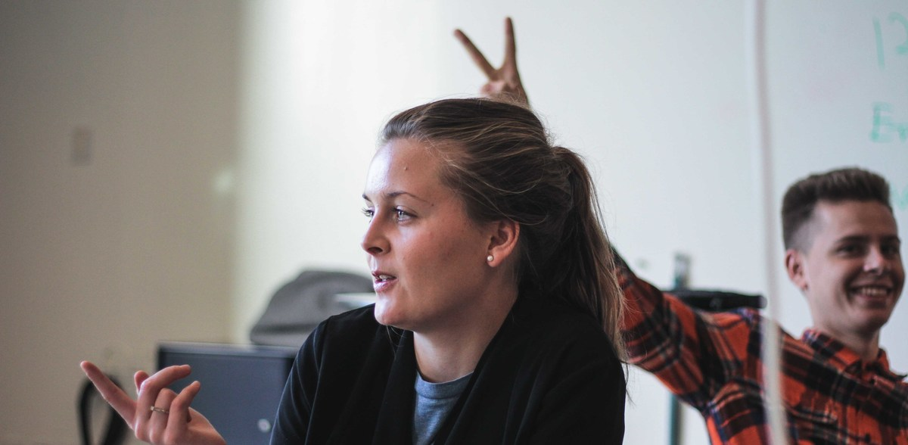

Kathrine fra UCplus om studerende fra udland
Interviewsby Petr Mrkvicka | Oct 4, 2017
Today we have an interview with Danish lecteurer Kathrine fra UCplus! This one is in Danish for you to practice but if you are struggling, just hover the sentences, you will see the English translation!

Why do you teach Danish?
Jeg underviser i dansk som andetsprog, fordi det er spændende og udfordrende at lære unge mennesker et nyt sprog, og samtidig møder jeg en masse nye mennesker fra forskellige kulturer.
How long do you teach Danish?
Jeg startede med at undervise i dansk som andetsprog for halvandet år siden, og jeg håber at kunne fortsætte med det mange år endnu.
What is your educational background?
Jeg har en kandidatgrad i Nordisk sprog og litteratur (Dansk) fra Aarhus Universitet. Derudover har jeg søgt ind på uddannelsen i ’Dansk som andetsprog’ på universitetet.

What'd you like to say about Danish?
Det danske sprog kan være utrolig svært og udfordrende at lære, og det kræver derfor hårdt arbejde at blive god til det. Derfor bliver man som underviser også utrolig glad og stolt, når ens studerende bliver bedre og bedre til at mestre det danske sprog.
How's it like to teach international students?
Det er lærerigt. De fleste internationale studerende taler allerede engelsk på et højt niveau, og er derfor lette at kommunikere med og lettere at lære et nyt sprog (det danske sprog).
How many other languages do you speak?
Udover dansk taler jeg engelsk og tysk, og har kendskab til svensk og norsk.
Have you got any funny stories of teaching Danish?
At udtale Æ, Ø og Å kan forekomme ganske svært, når man skal til at lære det danske sprog. Dette resulterer derfor ofte i smil og latter for alle deltagende.
How many classes a week do you teach?
Jeg underviser i 3 forskellige klasser. 1 på Ringvej Syd, 1 på Sønderhøj og 1 på Navitas i Aarhus.
What do you find difficult about Danish?
Det danske sprog som helhed er generelt svært at lære, så jeg synes ikke jeg kan pege på en ting, som det sværeste.
What do you find easy about Danish?
Som ved alle sprog er der nogle grammatiske regler, og hvis man lærer dem at kende, er det væsentlig lettere at lære dansk.
Are the international students mostly active or not?
Blandt de internationale studerende er der altid nogle som er mere aktive end andre, og dermed også nogle som hurtigere lærer sproget end andre. For at lære et sprog, er man nødt til at springe ud i det og begå fejl. Men lærer ikke dansk ved ikke at sige noget.
Do you also teach Danish other people, except students?
Lige nu underviser jeg kun internationale studerende i dansk som andetsprog. Men jeg kunne også undervise i dansk på gymnasier eller højskoler eksempelvis.
How many (in %) of students approx. finished the whole Danish education?
Det er meget forskelligt, hvor mange studerende der færdiggør danskuddannelsen, og hvor lang tid de tager om det. Så det er svært at svare på.
Why do you think international students should learn Danish?
Jeg synes, at det er vigtigt for internationale studerende at lære det danske sprog, da de for det første bor i Danmark i flere år, og derfor vil have lettere ved at falde til i landet. Derudover finder flere studerende sideløbende ud af, at de gerne efterfølgende vil blive boende i her, hvormed det bliver en nødvendighed at kende og kunne udtrykke sig på dansk.
If you can say, are there any differences between international students and Danish students?
Det er svært at sige præcis hvad forskellen er på at undervise danske studerende og internationale studerende. Men min erfaring med undervisningen af internationale studerende har vist, at de studerende er utrolig høflige og venlige overfor deres undervisere.
Next article in a row: Visit Grenen